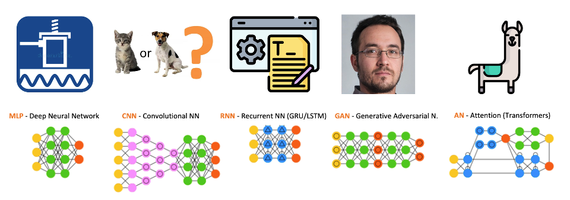
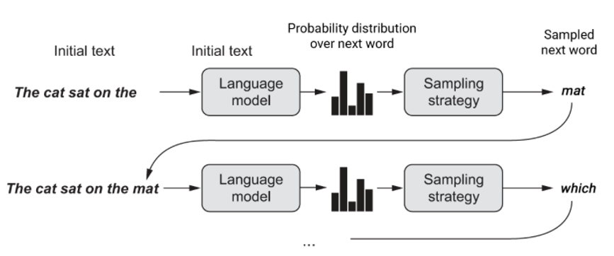
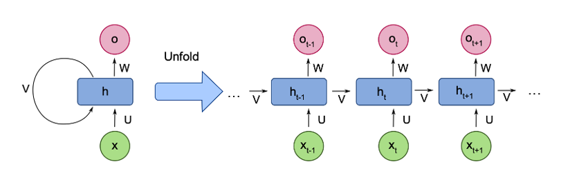
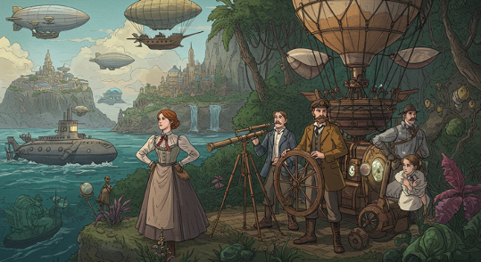
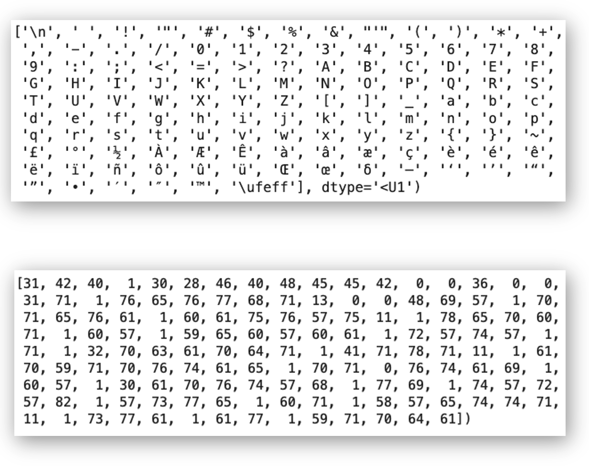
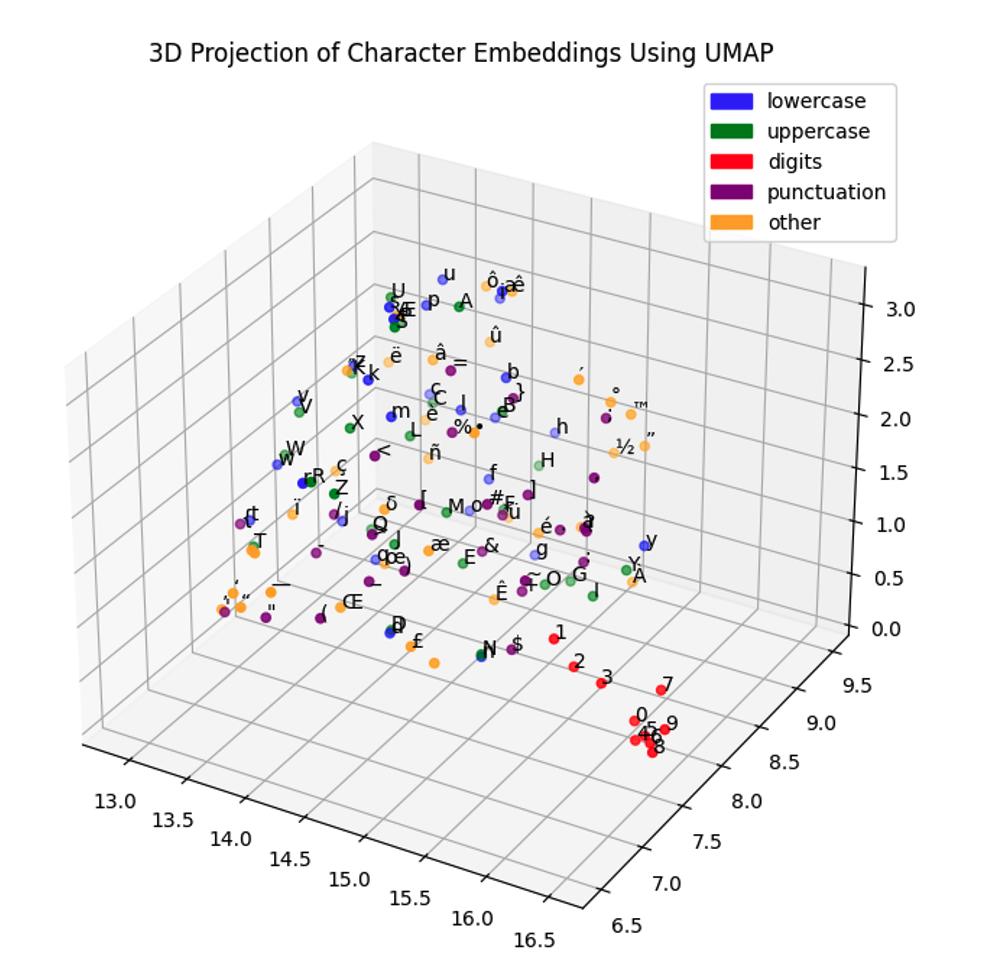
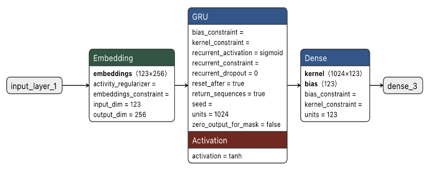
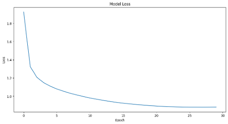

Text Generation with RNNs
The Jules Verne Bot
Introduction
In this chapter, we will explore how to build a character-level text generation model using Recurrent Neural Networks (RNNs), specifically inspired by the works of Jules Verne.
The “Jules Verne Bot” project will help to show us the fundamental concepts of sequence modeling and text generation using deep learning techniques, as a preview of how the modern LLMs work.
Project Overview:
- Goal: Create an AI model that generates text in the style of Jules Verne
- Architecture: RNN with GRU (Gated Recurrent Unit) layers
- Approach: Character-level text prediction
- Framework: TensorFlow/Keras
- Platform: Google Colab with Tesla T4 GPU
What Are We Actually Building?
Imagine we could teach a computer to write like Jules Verne, the famous author of “Twenty Thousand Leagues Under the Sea” and “Around the World in Eighty Days.” That’s precisely what we’re doing with the Jules Verne Bot. This project creates an artificial intelligence system that learns the patterns, style, and vocabulary from Jules Verne’s novels, then generates new text that sounds like it could have come from his pen.
Think of it like this: if we read enough of someone’s writing, we start to recognize their style. We notice they use certain phrases, prefer specific sentence structures, or have favorite topics. Our neural network does something similar, but with mathematical precision. It analyzes millions of characters from Verne’s works and learns to predict what character should come next in any given sequence.
Neural Network Architectures Background
Before we dive into the technical details, let’s understand why we use neural networks for this task and why we chose the specific type we did.
The Human Brain Analogy
When you read a sentence like “The submarine descended into the dark…” your brain automatically starts predicting what might come next. Maybe “depths” or “ocean” or “waters.” Your brain does this because it has learned patterns from all the text you’ve ever read. Neural networks work similarly, but they learn these patterns through mathematical calculations rather than biological processes.
Recurrent Neural Networks (RNN)
Before diving into our RNN implementation, let’s understand where RNNs fit in the neural network ecosystem:
Key Neural Network Architectures:

- MLP (Multi-Layer Perceptron): Basic feedforward networks for general tasks, for example, vibration analysis
- CNN (Convolutional Neural Networks): Specialized for image processing as Image Classification tasks and spatial data
- RNN (Recurrent Neural Networks): Designed for sequential data like text and time series
- GAN (Generative Adversarial Networks): Two networks competing for realistic data generation, as images
- Transformers (Attention Networks): Modern architecture using attention mechanisms, as in LLMs (Large Language Models, such as GPT)
We chose a Recurrent Neural Network (RNN) for this project because text has a crucial property: order matters tremendously. The sequence “The cat sat on the mat” means something completely different from “Mat the on sat cat the.” Regular neural networks process all inputs simultaneously, like looking at a photograph. But for text, we need a network that processes information sequentially, remembering what came before to understand what should go next.
In text generation, we aim to predict the most probable word to follow a sentence.

Think of reading a book. You don’t just look at all the words on a page simultaneously. You read word by word, sentence by sentence, and your understanding builds as you progress. Each new word is interpreted in the context of everything you’ve read before in that chapter. RNNs work the same way.
The Memory Problem and GRU Solution
Early RNNs had a significant problem: they couldn’t remember information for very long. Imagine trying to understand a story where you could only remember the last few words you read. You’d lose track of characters, plot points, and context very quickly.
This is where the Gated Recurrent Unit (GRU) comes in. Think of GRU as an improved memory system with two special abilities:
Reset Gate: This decides when to “forget” old information. If the story switches to a new scene or character, the reset gate helps the network forget irrelevant details from the previous context.
Update Gate: This decides how much new information to incorporate. When encountering important plot points or character names, the update gate helps the network remember these crucial details for longer.
It’s like having a smart note-taking system that automatically decides what’s worth remembering and what can be forgotten.
Why RNNs for Text Generation?
Recurrent Neural Networks are designed explicitly for sequential data processing. Key characteristics:
- Memory: RNNs maintain an internal state (memory) to remember previous inputs
- Sequential Processing: Process data one element at a time, making them ideal for text
- Variable Length Input: Can handle sequences of different lengths
- Parameter Sharing: Same weights applied across different time steps
RNN Architecture Flow:

Input Sequence: x(t-1) → x(t) → x(t+1) → ...
Hidden State: h(t-1) → h(t) → h(t+1) → ...
Output: o(t-1) → o(t) → o(t+1) → ...Dataset Preparation

Our model is trained on a curated collection of 10 classic Jules Verne novels, downloaded from public domain texts of the Gutenberg Project:
- “A Journey to the Centre of the Earth”
- “In Search of the Castaways”
- “An Antarctic Mystery”
- “In the year 2889”
- “Around the World in Eighty Days”
- “Michael Strogoff”
- “Five Weeks in a Balloon”
- “The Mysterious Island”
- “From the Earth to the Moon”
- “Twenty Thousand Leagues under the Sea”
“A Journey to the Centre of the Earth” teaches the model about geological descriptions and underground adventures. “Twenty Thousand Leagues Under the Sea” provides vocabulary about marine life and submarine technology. “Around the World in Eighty Days” offers geographical references and travel descriptions. Each book contributes unique vocabulary and stylistic elements while maintaining Verne’s consistent voice.
The complete dataset contains 5,768,791 characters, with 123 unique characters. To put this in perspective, that’s roughly equivalent to 1,200 pages of double-spaced text. This gives our neural network plenty of material to learn from, ensuring it can capture both common patterns and unique expressions in Verne’s writing.
Data Preprocessing Steps
# Example preprocessing workflow
def preprocess_text(text):
# Convert to lowercase for consistency
text = text.lower()
# Remove unwanted characters (optional)
# Keep punctuation for realistic text generation
return text
# Load and combine all books
all_text = ""
for book in book_list:
with open(book, 'r') as f:
all_text += preprocess_text(f.read())Tokenization and Vocabulary
Character-Level Tokenization
Here’s where our approach differs from how humans typically think about text. While we naturally think in words and sentences, our model processes text character by character. This means it learns that certain letters frequently follow others, that spaces separate words, and that punctuation marks signal sentence boundaries.
Why choose character-level processing? Consider the word “extraordinary,” which appears frequently in Verne’s work. A word-level model would need to have seen this exact word during training to use it. But a character-level model can generate this word by learning that ‘e’ often starts words, ‘x’ can follow ‘e’, ‘t’ often follows ‘x’, and so on. This allows our model to create new words or handle misspellings gracefully.
The downside is that character-level processing requires more computational steps to generate the same amount of text. Generating “Hello world” requires 11 prediction steps instead of just 2. However, for our educational purposes, this trade-off provides valuable insights into how language generation works at its most fundamental level.
Unlike word-level tokenization, character-level tokenization treats each character as a token.
Advantages of Character-Level Tokenization:
- No Out-of-Vocabulary Issues: Every possible character sequence can be generated
- Smaller Vocabulary: Only 123 unique characters vs thousands of words
- Language Agnostic: Works with any language or symbol system
- Handles Rare Words: Can generate new words character by character
Please see the following site for a great general visual explanation, from Andrej Karpathy, The Unreasonable Effectiveness of Recurrent Neural Networks.
Vocabulary Building Process
Computers work with numbers, not letters, so we need to convert our text into a numerical representation. We start by finding every unique character in our dataset. This includes not just letters A-Z and a-z, but also numbers, punctuation marks, spaces, and even special characters that might appear in the original texts.
Our Jules Verne collection contains 123 unique characters. These include obvious ones like letters and common punctuation, but also less common characters like accented letters from French names or special typography marks from the original publications.
Creating the Character Dictionary
We create two dictionaries: one that converts characters to numbers (encoding) and another that converts numbers back to characters (decoding). For example:
‘a’ might become 47, ‘b’ becomes 48, ‘c’ becomes 49, and so on. The space character might be 1, and the period might be 72. These assignments are arbitrary but consistent throughout our project.
When we want to process the phrase “The sea”, we convert it to something like [84, 72, 69, 1, 83, 69, 47]. When the model generates numbers like [84, 72, 69, 1, 87, 47, 83], we convert them back to “The was” (as an example).
# Create character-to-index mapping
text = "Your complete dataset text here..."
vocab = sorted(set(text))
char_to_idx = {char: idx for idx, char in enumerate(vocab)}
idx_to_char = {idx: char for idx, char in enumerate(vocab)}
print(f"Vocabulary size: {len(vocab)}")
print(f"Unique characters: {vocab}")
You can experiment with tokenization using OpenAI’s tokenizer tool at: https://platform.openai.com/tokenizer
Training Sequences
The Sliding Window Approach
Our model learns by playing a sophisticated prediction game. We show it sequences of 120 characters and ask it to predict what the 121st character should be. Think of it like a fill-in-the-blank exercise, but instead of missing words, we’re missing the next character.
For example, if our text contains “The submarine descended into the dark depths of the ocean”, we might show the model “The submarine descended into the dark depths of the ocea” and ask it to predict “n”. Then we slide our window forward by one character and show it “he submarine descended into the dark depths of the ocean” and ask it to predict the next character.
Training Configuration
- Sequence Length: 120 characters (approximately one paragraph)
- Input-Output Relationship: Predict the next character given the previous characters
Why 120 Characters?
We chose 120 characters as our context window because it represents roughly one paragraph of text. This gives the model enough context to understand local patterns (like completing words and phrases) while remaining computationally manageable. In practical terms, 120 characters might look like:
“The Nautilus had been cruising in these waters for some time. Captain Nemo stood on the bridge, observing the vast exp”
From this context, the model might predict “a” to complete “expanse” or “l” to form “explore”.
The longer the context window, the better the model can maintain coherence, but the more computer memory and processing time it requires.
Training Example
Input Sequence: “Hello my nam” Target Sequence: “ello my name”
The model learns:
- Given “H”, predict “e”
- Given “He”, predict “l”
- Given “Hel”, predict “l”
- And so on…
This means our dataset of 5.8 million characters becomes millions of individual training examples, each teaching the model about character sequence patterns.
Creating Training Data
def create_training_sequences(text, seq_length):
sequences = []
targets = []
for i in range(len(text) - seq_length):
# Input sequence
seq = text[i:i + seq_length]
# Target (next character)
target = text[i + 1:i + seq_length + 1]
sequences.append([char_to_idx[char] for char in seq])
targets.append([char_to_idx[char] for char in target])
return sequences, targetsCharacter Embeddings
From Sparse to Dense Representation
Initially, each character is represented as a one-hot vector, which is mostly zeros with a single one indicating which character it is. For 123 characters, this means each character is represented by a vector with 123 elements, where 122 are zero and 1 is one. This is wasteful and doesn’t capture any relationships between characters.
Character embeddings solve this problem by representing each character as a dense vector of real numbers. Instead of 123 mostly-zero values, each character becomes 256 meaningful numbers. These numbers are learned during training and end up encoding relationships between characters.
Learning Character Relationships
Something fascinating happens during training: characters that behave similarly end up with similar embedding vectors. Vowels tend to cluster together because they can often substitute for each other in similar contexts. Consonants that frequently appear together (like ‘th’ or ‘ch’) develop related embeddings.
The model learns that uppercase and lowercase versions of the same letter are related but distinct. It discovers that digits form their own cluster since they appear in similar contexts (dates, measurements, chapter numbers). Punctuation marks develop embeddings based on their grammatical functions.
Visualization and Understanding
When we project these 256-dimensional embeddings down to 3D space for visualization, we can see these learned relationships. The embedding space becomes a map where distance represents similarity. Characters that can substitute for each other in many contexts end up close together, while characters with completely different roles end up far apart.
This learned representation becomes the foundation for everything else the model does. The quality of these embeddings directly affects the model’s ability to generate coherent text.

You can play with Word2Vec - Embedding Projector
Model Architecture
RNN Architecture Components
Our Jules Verne Bot consists of three main components, each serving a specific purpose in the text generation pipeline.
Embedding Layer: This is our translation layer. It takes character indices (numbers like 47, 83, 72) and converts them into dense 256-dimensional vectors that capture character relationships. Think of this as converting raw symbols into a format that captures meaning and relationships.
GRU Layer: This is the brain of our operation. With 1024 hidden units, this layer processes sequences and maintains memory about what it has seen. When processing the sequence “The submarine descended”, the GRU maintains a hidden state that encodes information about the submarine, the action of descending, and the overall maritime context.
Dense Output Layer: This is our decision-making layer. It takes the GRU’s 1024-dimensional hidden state and converts it into 123 probabilities, one for each character in our vocabulary. These probabilities represent the model’s confidence about what character should come next.

Model Summary
Model: "sequential_4"
_________________________________________________________________
Layer (type) Output Shape Param #
=================================================================
embedding_4 (Embedding) (1, 120, 256) 31,488
_________________________________________________________________
gru_3 (GRU) (1, 120, 1024) 3,938,304
_________________________________________________________________
dense_3 (Dense) (1, 120, 123) 126,075
=================================================================
Total params: 4,095,867 (15.62 MB)
Trainable params: 4,095,867 (15.62 MB)
Non-trainable params: 0 (0.00 B)Our model has 4,095,867 parameters. These are the individual numbers that the model adjusts during training to improve its predictions. To put this in perspective, each parameter is like a tiny dial that affects how the model processes information.
Training involves adjusting all 4 million dials to work together harmoniously.
The GRU layer contains most of these parameters (about 3.9 million) because it needs to learn complex patterns about how characters relate to each other across different time steps. The embedding layer has about 31,000 parameters (123 characters × 256 dimensions), and the output layer has about 126,000 parameters.
Memory and Processing Flow
When processing text, information flows through the model like this:
A character index enters the embedding layer and becomes a 256-dimensional vector. This vector enters the GRU, which combines it with its current memory state to produce a new 1024-dimensional hidden state. This hidden state captures everything the model “knows” at this point in the sequence.
The hidden state goes to the dense layer, which produces probability scores for each of the 123 possible next characters. The character with the highest probability becomes the model’s prediction.
Crucially, the GRU’s hidden state becomes its memory for the next character prediction. This creates a chain of memory that allows the model to maintain context across the entire sequence.
Why GRU over Basic RNN?
GRU Advantages:
- Solves Vanishing Gradient: Better information flow through long sequences
- Selective Memory: Can choose what to remember and forget
- Computational Efficiency: Fewer parameters than LSTM
- Better Performance: More stable training than basic RNNs
Training Process: Teaching the Model to Write
The Learning Objective
Training a neural network means adjusting its millions of parameters so it makes better predictions. We use a loss function called sparse categorical crossentropy, which measures how far off the model’s predictions are from the correct answers.
Think of it like teaching someone to play darts. Each throw (prediction) has a target (the correct next character). The loss function measures how far each dart lands from the bullseye. Training adjusts the player’s technique (the model’s parameters) to improve accuracy over time.
Hardware and Time Requirements
We trained our model on a Tesla T4 GPU, which can perform thousands of calculations simultaneously. This parallelization is crucial because each training step involves matrix multiplications with millions of numbers. The training took 33 minutes for 30 complete passes through the entire dataset.
To understand why we need a GPU, consider that training involves calculating gradients for all 4 million parameters, potentially thousands of times per second. A regular CPU would take days or weeks to complete the same training that a GPU accomplishes in minutes.
Monitoring Progress
During training, we watch the loss decrease from about 1.9 to 0.9. This represents the model’s improving ability to predict the next character. Early in training, the model makes essentially random predictions. By the end, it has learned sophisticated patterns about English spelling, grammar, and Jules Verne’s writing style.
The learning curve typically shows rapid improvement in the first few epochs as the model learns basic patterns like common letter combinations. Later epochs show slower but steady improvement as the model refines its understanding of more complex patterns like narrative structure and thematic elements.

Preventing Overfitting
One challenge in training is overfitting, where the model memorizes the training data instead of learning generalizable patterns. We use techniques like monitoring validation loss and potentially stopping training early if the model stops improving on unseen text.
Training Configuration
Hardware Setup:
- GPU: Tesla T4 (Google Colab)
- GPU RAM: 15.0 GB
- Training Time: 33 minutes for 30 epochs
Training Parameters:
- Loss Function: Categorical Sparse Crossentropy
- Optimizer: Adam (adaptive learning rate)
- Epochs: 30
- Batch Size: 128
- Buffer Size: 10,000 (for dataset shuffling)
Training Implementation
# Model compilation
model.compile(
optimizer='adam',
loss='sparse_categorical_crossentropy',
metrics=['accuracy']
)
# Training with callbacks
history = model.fit(
dataset,
epochs=30,
batch_size=128,
validation_split=0.1,
callbacks=[
tf.keras.callbacks.ReduceLROnPlateau(patience=3),
tf.keras.callbacks.EarlyStopping(patience=5)
]
)Text Generation
The Generation Process
Once trained, our model becomes a text generation engine. We start with a seed phrase like:
“THE FLYING SUBMARINE”
and ask the model to continue the story. The process works character by character:
The model receives “THE FLYING SUBMARINE” and predicts the most likely next character based on everything it learned from Jules Verne’s works. Maybe it predicts a space, starting a new word. Then we feed “THE FLYING SUBMARINE” (with the space) back to the model and ask for the next character.
This process continues indefinitely, with each new character becoming part of the context for predicting the next one. The model might generate “THE FLYING SUBMARINE descended into the mysterious depths…” as it draws upon patterns learned from Verne’s nautical adventures.
Temperature Control
Here’s where we can control the model’s creativity through a parameter called temperature. Temperature affects how the model chooses between different possible next characters.
With temperature set to 0.1, the model almost always picks the most probable next character. This produces very predictable, conservative text that closely mimics the training data but might be repetitive or boring.
With temperature set to 1.0, the model considers all possible next characters according to their learned probabilities. This produces more varied and creative text, but sometimes makes unusual choices that lead to interesting narrative directions.
With temperature above 1.5, the model becomes quite random, often producing text that starts coherently but gradually becomes nonsensical as unlikely character combinations accumulate.
In short:
- Temperature = 0.5: More predictable, conservative text
- Temperature = 1.0: More creative, diverse text
- Temperature = 1.5: Very random, potentially nonsensical text
Implementation
def generate_text(model, start_string, num_generate=1000, temperature=1.0):
# Convert start string to numbers
input_eval = [char_to_idx[s] for s in start_string]
input_eval = tf.expand_dims(input_eval, 0)
text_generated = []
model.reset_states()
for i in range(num_generate):
predictions = model(input_eval)
predictions = tf.squeeze(predictions, 0)
# Apply temperature
predictions = predictions / temperature
predicted_id = tf.random.categorical(predictions, num_samples=1)[-1,0].numpy()
# Add predicted character to input
input_eval = tf.expand_dims([predicted_id], 0)
text_generated.append(idx_to_char[predicted_id])
return start_string + ''.join(text_generated)Generation Example (Temperature = 0.5)
Seed: “THE FLYING SUBMARINE”
Generated Text:
THE FLYING SUBMARINE
CHAPTER 100 VENTANTILE
This eBook is for the use of anyone anywhere in the United States and most
other parts of the earth and miserable eruptions. The solar rays should be
entirely under the shock of the intensity of the sea. We were all sorts. Are
we to prepare for our feelings?"
"I can never see them a good geographer," said Mary.
"Well, then, John, for I get to the Pampas, that we ought to obey the same
time. In the country of this latitude changed my brother, and the
_Nautilus_ floated in a sea which contained the rudder and
lower colour visibly. The loiter was a fatalint region the two
scientific discoverers. Several times turning toward the river, the cry
of doors and over an inclined plains of the Angara, with a threatening
water and disappeared in the midst of the solar rays.
The weather was spread and strewn with closed bottoms which soon appeared
that the unexpected sheets of wind was soon and linen, and the whole
seas were again landed on the subject of the natives, and the prisoners
were successively assuming the sides of this agreement for fifteen days
with a threatening voice.
...Example Output Analysis
Let’s examine some generated text: “The weather was spread and strewn with closed bottoms which soon appeared that the unexpected sheets of wind was soon and linen, and the whole seas were again landed on the subject of the natives…”
This excerpt shows both the model’s strengths and limitations. It successfully captures Verne’s descriptive style and maritime vocabulary (“seas,” “wind,” “natives”). The sentence structure feels appropriately Victorian and elaborate. However, the meaning becomes confused with phrases like “closed bottoms” and “sheets of wind was soon and linen.”
This illustrates the fundamental challenge of character-level generation: the model learns local patterns (how words are spelled, common phrases) much better than global coherence (logical narrative flow, consistent meaning).
Challenges and Limitations
Context Window Constraints
Our 120-character context window creates a fundamental limitation. The model can only “see” about one paragraph of previous text when making predictions. This means it might introduce a character named Captain Smith, then 200 characters later introduce another character with the same name, having “forgotten” the first introduction.
Humans writing stories maintain mental models of characters, plot lines, and world-building details across entire novels. Our model’s memory effectively resets every 120 characters, making long-term narrative consistency nearly impossible.
Character vs. Word Level Trade-offs
Character-level generation requires many more prediction steps than word-level generation. Generating the phrase “extraordinary adventure” requires 22 character predictions instead of just 2 word predictions. This makes character-level generation much slower and more computationally expensive.
However, character-level generation offers unique advantages. The model can generate new words it has never seen before by combining character patterns. It can handle misspellings, made-up words, or technical terms more gracefully than word-level models that have fixed vocabularies.
Coherence Challenges
Perhaps the biggest limitation is maintaining semantic coherence. The model might generate grammatically correct text that makes no logical sense. It can describe “The submarine floating in the air above the mountain peaks” because it has learned that submarines float and that Verne often described mountains, but it hasn’t learned the physical constraint that submarines float in water, not air.
This happens because the model learns statistical patterns without understanding meaning. It knows that certain word combinations are common without understanding why they make sense.
Summary
- Limited Context Window
- Issue: Only 120 characters of context
- Impact: Cannot maintain coherence over long passages
- Example: May forget characters or plot points mentioned earlier
- Character vs Word Level
- Issue: Character-level generation is slower and less efficient
- Impact: Requires more computation for equivalent output
- Trade-off: Better handling of rare words vs efficiency
- Coherence Problems
- Issue: May generate grammatically correct but semantically inconsistent text
- Cause: Limited understanding of story structure and plot consistency
- Repetitive Patterns
- Issue: May fall into repetitive loops
- Cause: Model overfitting to common patterns in training data
Potential Improvements
- Longer Context Windows: Increase sequence length for better coherence
- Hierarchical Models: Separate models for different text levels (word, sentence, paragraph)
- Fine-tuning: Additional training on specific styles or topics
- Beam Search: Better text generation algorithms instead of greedy sampling
What will lead us to modern Language Models based on Transformers arquiteture .
Connecting to Modern Language Models
Scale Comparison
To appreciate how far language modeling has advanced, consider the scale differences between our Jules Verne Bot and modern language models:
Our model has 4 million parameters and was trained on 5.8 million characters (about 10 books). GPT-3 has 175 billion parameters and was trained on 45 terabytes of text (roughly equivalent to millions of books). That’s a difference of over 40,000 times more parameters and millions of times more training data.
Modern small language models (SLMs) like Phi-3-mini still dwarf our model with 3.8 billion parameters, but they represent more efficient designs that achieve impressive performance with “only” 1,000 times more parameters than our model.
| Aspect | Jules Verne Bot | GPT-3 (2020) | Phi-3-mini (2024) |
|---|---|---|---|
| Architecture | RNN (GRU) | Transformer | Transformer |
| Parameters | 4 million | 175 billion | 3.8 billion |
| Training Data | 5.8M characters | 45TB text | 3.3T tokens |
| Context Length | 120 characters | 2,048 tokens | 128,000 tokens |
| Tokenization | Character-level | Subword (BPE) | Subword |
| Training Time | 33 minutes | Months | 7 days |
| GPU Requirements | 1 Tesla T4 | Thousands of GPUs | 512 H100 GPUs |
Architectural Evolution
The biggest advancement since RNNs is the Transformer architecture, which uses attention mechanisms instead of recurrent processing. While RNNs process text sequentially (like reading word by word), Transformers can examine all parts of a text simultaneously and learn relationships between any two words, regardless of how far apart they are.
This solves the long-term memory problem that limits our RNN model. A Transformer can maintain awareness of a character introduced in a hypothetical “chapter 1” while writing “chapter 10”, something our 120-character context window makes impossible.
Training Efficiency
Modern models also benefit from more sophisticated training techniques. They’re pre-trained on massive, diverse datasets to learn general language patterns, then fine-tuned on specific tasks. They use techniques like instruction tuning, where they learn to follow human commands, and reinforcement learning from human feedback, where they learn to generate text that humans find helpful and appropriate.
Summary: Why Modern Models Perform Better?
- Transformer Architecture
- Attention Mechanism: Can look at any part of the input sequence
- Parallel Processing: Much faster training and inference
- Better Long-range Dependencies: Maintains context over thousands of tokens
- Scale
- More Data: Trained on vastly more diverse text
- More Parameters: Can memorize and generalize better
- More Compute: Allows for more sophisticated training techniques
- Advanced Techniques
- Pre-training + Fine-tuning: Learn general language then specialize
- Instruction Tuning: Trained to follow human instructions
- RLHF: Reinforcement Learning from Human Feedback
Conclusion:
Building the Jules Verne Bot teaches us that creating artificial intelligence systems capable of generating human-like text requires careful consideration of multiple components working together. The embedding layer learns to represent characters meaningfully, the RNN layer processes sequences and maintains memory, and the output layer makes predictions based on learned patterns.
The project also illustrates the fundamental trade-offs in machine learning: between model complexity and training speed, between creativity and coherence, between local accuracy and global consistency. These trade-offs appear in every AI system, from simple character-level generators to the most sophisticated language models.
Most importantly, this project demonstrates that impressive AI capabilities emerge from relatively simple components combined thoughtfully. Our 4-million parameter model, while limited compared to modern systems, genuinely learns to write in Jules Verne’s style through nothing more than statistical pattern recognition and mathematical optimization.
The techniques we’ve explored, sequence processing, embedding learning, and generation strategies, form the foundation for understanding any language model. Whether you encounter RNNs, Transformers, or future architectures yet to be invented, the core concepts remain consistent: learn patterns from data, encode meaning in mathematical representations, and generate new content by predicting what should come next.
Understanding these fundamentals provides the foundation for working with, improving, or creating the next generation of language models that will shape how humans and computers communicate in the future.